UX/UI Design
Nucare
Você, seu nutricionista e seu chef em um só lugar.
Facilitando o acesso a uma alimentação saudável e personalizada ao conectar pacientes a chefs e nutricionistas por meio de uma experiência digital intuitiva.

O desafio
Seguir um plano alimentar recomendado por um nutricionista parece simples na teoria, mas na prática, é outro desafio.
Na correria do dia a dia, falta tempo para escolher, comprar e preparar os ingredientes certos. Muitas pessoas começam motivadas, mas acabam cedendo à praticidade das opções rápidas, comprometendo seus objetivos.
Foi o caso de um cliente que nos procurou. Apesar de boas intenções, a falta de tempo e organização o levava a deslizes e, eventualmente, ao abandono do plano. Sua frustração reflete a de muitos: ter orientação nutricional não basta quando a rotina impede a prática.
Isso nos fez refletir: quais barreiras dificultam a adesão a um plano alimentar? E como podemos torná-lo mais viável e leve para o dia a dia?
Para responder a essas perguntas, nossa equipe se dedicou a investigar o seguinte desafio:
Como aumentar a adesão dos pacientes a planos alimentares recomendados pelos nutricionistas?
Cenário atual

Segundo o Relatório Global sobre Alimentação de 2024, a partir de 2022, 43% dos adultos apresentaram sobrepeso e 16% obesidade, mais que o dobro em relação a 30 anos atrás. Dietas não saudáveis são apontadas como os principais fatores de risco para doenças não transmissíveis, responsáveis por mais de 73% das mortes associadas a essas enfermidades. Melhorar a qualidade da alimentação, aumentando o consumo de frutas e vegetais, pode reduzir essa mortalidade em 20%.
No Brasil, um estudo da Outcast Capital revelou que 62% da população está acima do peso devido a maus hábitos alimentares, e mais de 70% das internações no SUS estão relacionadas, direta ou indiretamente, à má alimentação. Apesar desse cenário preocupante, uma pesquisa da Ticket aponta um crescente aumento da conscientização sobre a importância de uma dieta equilibrada.
Entretanto, essa consciência nem sempre resulta em mudanças reais nos hábitos alimentares. Diversos fatores dificultam a adoção de um estilo de vida mais saudável, como falta de tempo, alto custo dos ingredientes, motivação insuficiente, falta de apoio familiar, rigidez nos planos alimentares, estresse e a ausência de sintomas alarmantes. Ademais, o Relatório Global sobre Alimentação de 2024 indica que menos da metade da população tem acesso adequado a frutas, vegetais e outros alimentos nutritivos devido a desafios econômicos e logísticos.
Solução
Para enfrentar esse desafio e transformar conhecimento em ação, criamos o Nucare, um aplicativo que conecta pacientes, nutricionistas, chefs e entregadores de forma prática e eficiente. Com ele, os usuários podem receber refeições saudáveis e prontas diretamente onde estiverem, eliminando preocupações com a compra de ingredientes, preparo e organização das refeições.
O aplicativo promove uma comunicação integrada entre pacientes, nutricionistas e chefs, permitindo ajustes personalizados nos planos alimentares. Também oferece uma comunidade de apoio, onde os usuários podem compartilhar experiências, trocar dicas e manter a motivação ao longo do processo.
Ao unir praticidade, personalização e suporte contínuo, o Nucare busca transformar a forma como as pessoas se relacionam com a alimentação saudável, tornando essa mudança mais acessível, sustentável e eficaz.
Benchmarking
Para compreender o mercado e a concorrência, realizamos uma análise comparativa detalhada de aplicativos voltados a soluções nutricionais. Durante esta etapa, mapeamos as principais funcionalidades de cada plataforma, identificando semelhanças, diferenciais, forças, fraquezas e oportunidades de cada negócio:
Análise comparativa de concorrentes
As funcionalidades dos aplicativos analisados foram consolidadas em um gráfico de barras que mostra a frequência absoluta e relativa de cada recurso, conforme imagem a seguir:
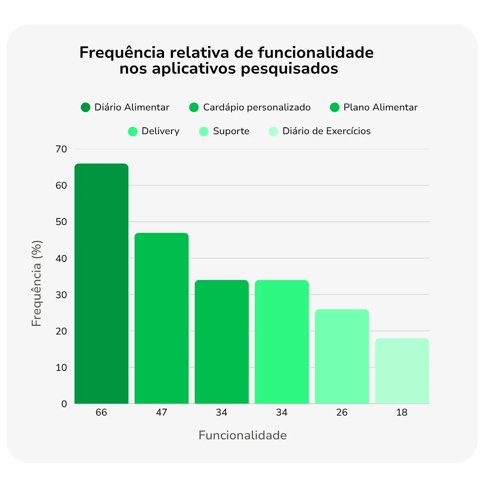
Analisando os concorrentes acima, identificamos diversas soluções digitais voltadas para a saúde e nutrição. Muitos aplicativos do mercado oferecem funcionalidades como controle de calorias, planejamento de refeições, acompanhamento por nutricionistas e delivery de pratos saudáveis.
Há escassez de plataformas que conectam nutricionistas, chefs e consumidores de forma integrada. O modelo proposto pelo Nucare visa preencher essa lacuna, oferecendo uma solução que une consultoria nutricional, cardápios personalizados em tempo real e delivery de chefs parceiros.
SMART
Para compreender de forma estratégica o impacto da má alimentação na saúde pública e os desafios enfrentados pela população, aplicamos a ferramenta SMART, um método amplamente utilizado para definir metas claras, realistas e mensuráveis.
Adaptamos essa estrutura para analisar dados recentes sobre hábitos alimentares e identificar oportunidades de intervenção, com foco em soluções viáveis e relevantes. A seguir, apresentamos um infográfico que traduz essa análise de forma visual e objetiva.

Objetivo geral
Aumentar a adesão dos pacientes a planos alimentares recomendados por seus nutricionistas, através do desenvolvimento de um aplicativo que facilite o acesso a refeições saudáveis, a comunicação entre profissionais e pacientes, e a educação alimentar personalizada.
Objetivos específicos
- Aumentar a disponibilidade de refeições saudáveis, conectando pacientes com chefs e fornecedores locais para oferecer opções nutritivas e acessíveis, considerando o poder aquisitivo e as preferências alimentares dos usuários.
- Facilitar a comunicação entre pacientes e nutricionistas, proporcionando um canal direto para acompanhamento de dietas, ajuste de planos alimentares e esclarecimento de dúvidas, com base em feedback contínuo.
- Facilitar a comunicação entre pacientes e chefs, permitindo que os usuários façam pedidos personalizados e interajam com os profissionais para adaptar as refeições às suas necessidades dietéticas específicas.
- Aumentar o acesso a informações nutricionais de qualidade, oferecendo conteúdos educativos desenvolvidos por nutricionistas, que abordem desde dicas práticas para melhorar a alimentação até informações sobre os benefícios de alimentos específicos.
- Incentivar a adesão contínua ao plano alimentar, por meio de recursos que mantenham os pacientes motivados, como gamificação, monitoramento de progresso e suporte de uma comunidade de pacientes que compartilham experiências.
- Reduzir as barreiras de custo e tempo na adesão a planos alimentares saudáveis, oferecendo uma solução prática de delivery e tornando os alimentos saudáveis mais acessíveis e convenientes.
- Estabelecer parcerias estratégicas com chefs, fornecedores e organizações de saúde, visando ampliar o alcance do app e garantir a qualidade das refeições e conteúdos oferecidos aos usuários.
Prazo de implementação
Definimos o prazo de um ano para o desenvolvimento do aplicativo e a implementação das estratégias voltadas para aumentar a adesão dos pacientes aos planos alimentares. Esse período é justificado pela complexidade do projeto e a necessidade de um planejamento cuidadoso. Durante esse tempo, vamos garantir não só o desenvolvimento técnico do app, mas também realizar testes e ajustes contínuos com base no feedback dos usuários. Além disso, esse prazo permite a formação de parcerias estratégicas com chefs e fornecedores, a criação de uma comunidade engajada entre pacientes e nutricionistas, e a produção de conteúdos educacionais de qualidade. Também possibilita a implementação de campanhas de marketing eficazes e a promoção gradual da adesão ao aplicativo, garantindo uma avaliação contínua e a sustentabilidade dos resultados a longo prazo.
HEART
Por que escolhemos o método HEART como métrica em nosso case de UX
Na construção de experiências centradas no usuário, é essencial adotar métricas que realmente reflitam o impacto do produto na vida das pessoas. Por isso, escolhemos o Método HEART como principal guia para mensurar a experiência no nosso projeto.
Além de ser uma abordagem estruturada e flexível, o HEART nos permite equilibrar métricas quantitativas e qualitativas, oferecendo uma visão completa sobre o comportamento, engajamento e satisfação dos usuários.
Essa escolha foi estratégica para garantir que nossas decisões de design fossem fundamentadas em dados relevantes, com foco no que realmente importa: as pessoas.

Sugestões de métricas que podem ser adicionadas
Métrica de impacto: além de focar em retenção, engajamento e adoção, seria interessante incluir métricas de impacto real na saúde dos usuários, como:
- Perda de peso (para planos de emagrecimento): acompanhar a evolução da saúde de usuários em dietas específicas.
- Nível de satisfação com a saúde e bem-estar: realizar pesquisas periódicas sobre como o uso do app impacta a qualidade de vida.
Métrica de comunidade: considerando que o aplicativo também promoverá interação entre pacientes, seria interessante medir o engajamento dentro da comunidade:
- Número de interações ou postagens em fóruns/comunidades: para monitorar como os usuários se ajudam mutuamente.
Sobre as ferramentas
- Testes de usabilidade contínuos com usuários para garantir que o app está atendendo suas necessidades reais.
- AARRR: pode complementar o HEART, pois aborda Aquisição, Ativação, Retenção, Receita e Referência. Ele poderia ser incluído aqui como uma forma de detalhar ainda mais a jornada do usuário e como o aplicativo pode gerar valor financeiro ou social através de engajamento contínuo.
Business Model Canvas
Para garantir que a solução proposta estivesse verdadeiramente alinhada com os objetivos do negócio, optamos por utilizar o Business Model Canvas (BMC).
Essa ferramenta nos ajudou a visualizar de forma estratégica os principais blocos que sustentam o modelo de negócio, como proposta de valor, canais, fontes de receita e segmentos de clientes. Com isso, conseguimos não apenas compreender o contexto do produto dentro da empresa, mas também identificar oportunidades de inovação e áreas que poderiam ser otimizadas a partir da experiência do usuário. O BMC nos permitiu manter o equilíbrio entre as necessidades do usuário e as metas da organização ao longo de todo o processo de design.

Value Proposition Canvas
O Value Proposition Canvas (VPC) foi fundamental para aprofundarmos a compreensão sobre o que realmente gera valor para os nossos usuários. Através dessa ferramenta, mapeamos de forma clara as tarefas que os usuários desejam realizar, suas dores e ganhos esperados, conectando esses insights diretamente à proposta de valor do produto.
O VPC nos ajudou a identificar oportunidades reais de diferenciação e a criar soluções mais relevantes e direcionadas. Ao colocar o usuário no centro das decisões, garantimos que a experiência desenhada fosse mais do que funcional — fosse significativa.
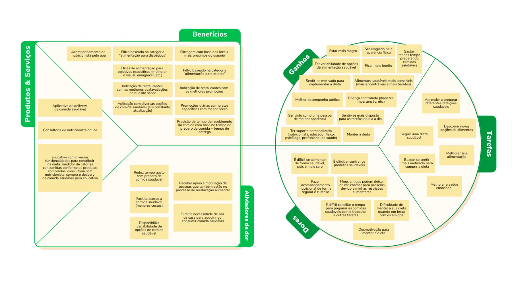
Pesquisas quantitativas
Coletando dados para embasar decisões
Para compreender melhor o comportamento, as necessidades e expectativas dos usuários, iniciamos nossa investigação com uma pesquisa quantitativa.
Elaboramos um questionário estruturado e o disponibilizamos através do Google Forms, ferramenta que nos permitiu alcançar rapidamente um número relevante de participantes e organizar os dados de forma eficiente.
As respostas coletadas foram fundamentais para identificar padrões, validar hipóteses e levantar insights que direcionaram as próximas etapas do projeto. A partir da análise desses dados, criamos um infográfico visual e informativo, com o objetivo de sintetizar os principais achados e facilitar a comunicação dos resultados.
Planejamento
Propósito e objetivos: a pesquisa quantitativa visou coletar dados numéricos que permitem entender as necessidades, comportamentos e hábitos alimentares de potenciais usuários. Além disso, utilizou-se um screener para identificar participantes qualificados para futuras entrevistas qualitativas.
Participantes: a pesquisa contou com 86 participantes, incluindo pessoas do círculo social dos pesquisadores e alunos do curso de UX Unicórnio.
- Critério de inclusão: pessoas que estão fazendo ou tentando fazer dieta.
- Critério de exclusão: não houve.
Método e procedimentos: um questionário de 12 perguntas (10 fechadas e 2 abertas) foi elaborado no Google Forms, abordando aspectos como demografia, preferências alimentares, relação com nutricionistas e hábitos alimentares. A pesquisa foi realizada sem incentivos financeiros.
Análise de dados
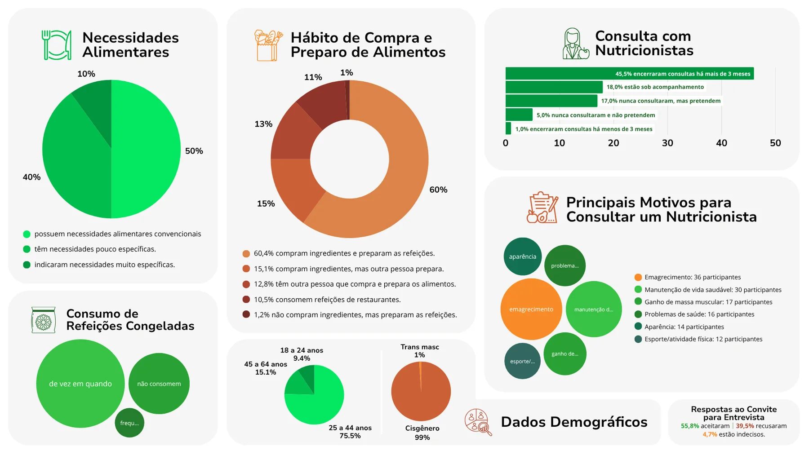
Principais insights
- A maioria dos participantes apresenta necessidades alimentares convencionais, mas há um grupo significativo com necessidades específicas.
- Mais da metade dos participantes prepara suas próprias refeições, o que evidencia um perfil de autonomia alimentar.
- A maior parte dos respondentes consome refeições congeladas ocasionalmente, sinalizando abertura para produtos prontos, mas saudáveis.
- O acompanhamento nutricional ainda é pouco acessado, mas a intenção de buscar suporte é alta.
- Os motivos para consultas refletem tanto objetivos estéticos (emagrecimento, aparência) quanto preocupações com saúde e desempenho físico.
- A faixa etária predominante é de jovens adultos e adultos entre 25 e 44 anos, público-alvo com potencial de engajamento em soluções digitais.
Conclusão
A pesquisa quantitativa trouxe dados valiosos que embasam a construção do perfil de usuários e suas principais necessidades. Esses resultados orientarão as próximas etapas da pesquisa qualitativa, com foco na validação das hipóteses e na compreensão mais profunda do comportamento alimentar.
Matriz Impacto × Conhecimento
| Área de pesquisa | Impacto | Conhecimento | Ação prioritária |
|---|---|---|---|
| Aceitação do modelo híbrido (acompanhamento nutricional remoto + presencial). | Alto | Baixo | Conduzir uma pesquisa direcionada sobre as preferências de acompanhamento (remoto, presencial ou híbrido). |
| Barreiras reais para adoção de tecnologias de saúde alimentar entre diferentes faixas etárias. | Alto | Baixo | Investigar mais profundamente os hábitos digitais e as dificuldades dos usuários com o app e delivery. |
| Preferência pelo WhatsApp como canal principal de comunicação com nutricionistas, ao invés de apps dedicados. | Alto | Baixo | Avaliar por que o WhatsApp é preferido (praticidade, familiaridade, etc.) e como integrar essa preferência à solução. |
| Canais mais eficazes para engajar e reter usuários no uso contínuo de tecnologias nutricionais. | Alto | Baixo | Realizar testes de comunicação (A/B testing, por exemplo) ou entrevistas específicas com usuários. |
Foco principal para pesquisa
Com base na matriz, as áreas de maior impacto e baixo conhecimento devem ser priorizadas. Em seu caso, essas áreas são:
- Aceitação do modelo híbrido de acompanhamento nutricional.
- Barreiras para a adoção de tecnologias de saúde alimentar.
- Canais eficazes para engajar e reter usuários.
- Criar uma integração entre o aplicativo e o WhatsApp, possibilitando transições fáceis entre as plataformas.
- Incorporar funcionalidades semelhantes ao WhatsApp no app, como mensagens instantâneas ou lembretes, mas mantendo o app como principal ferramenta.
- Compreender as barreiras de uso de um app dedicado, como complexidade ou falta de confiança, e desenvolver estratégias para superá-las.
Pesquisas qualitativas
A pesquisa qualitativa buscou explorar em profundidade as motivações, percepções e experiências dos usuários em relação a hábitos alimentares, dietas e acompanhamento nutricional. Esta etapa complementa os dados quantitativos, proporcionando insights detalhados sobre as necessidades e dores dos participantes.
Os principais objetivos incluem:
- Compreender os desafios enfrentados ao adotar uma alimentação saudável.
- Identificar motivações e barreiras para o uso de soluções como aplicativos de nutrição.
- Explorar a relação emocional dos participantes com hábitos alimentares e dietas.
Participantes
Os participantes foram selecionados com base nos critérios da pesquisa quantitativa, priorizando aqueles que:
- Participantes que são pacientes de nutricionistas;
- Participantes que são nutricionistas;
- Participantes que são chefs;
- Estão fazendo ou tentando fazer dieta;
- Demonstraram interesse em participar de entrevistas.
Número de participantes: 10 a 15 pessoas (baseado no princípio da saturação de dados), sendo 6 pacientes, 4 nutricionistas e 3 chefs.
Diversidade amostral: equilíbrio entre gênero, faixa etária e motivações alimentares (emagrecimento, saúde, estética, etc.).
Método e procedimentos
Entrevistas em profundidade
- Duração: 40 a 60 minutos.
- Formato: online (via videoconferência) ou presencial, dependendo da preferência do participante e da viabilidade para o entrevistador.
Ferramentas utilizadas
- Sistema de agendamentos do Google Agenda para permitir que os entrevistados escolhessem os melhores horários.
- Google Meet para gravação das entrevistas (com termo aceito de autorização de uso de imagem e voz para fins de pesquisa);
- Bloco de anotações / Word e transcritor automático para coleta de insights.
Roteiro de entrevista
Entrevista com pacientes
Acesso ao arquivo detalhado para entrevista (modelo): Entrevista Pacientes. Dividido em seções:
- Introdução (apresentação, objetivos e consentimento).
- Rotina alimentar e hábitos de consumo.
- Percepções sobre acompanhamento nutricional e dietas.
- Experiências com tecnologias (apps, delivery, receitas, etc.).
- Motivadores e barreiras na jornada de alimentação saudável.
Entrevista com nutricionistas
Acesso ao arquivo detalhado para entrevista (modelo): Ficha técnica nutricionistas. Dividido em seções:
- Introdução (apresentação, objetivos e consentimento).
- Experiência profissional.
- Desafios e necessidades dos pacientes.
- Planos alimentares diversificados.
- Tecnologia e personalização.
- Solução que unifique nutricionistas + chefs + pacientes.
- Feedback e aprendizado contínuo.
- Encerramento.
Entrevista com chefs
Acesso ao arquivo detalhado para entrevista (modelo): Ficha técnica Entrevista Personal Chef. Dividido em seções:
- Introdução (apresentação, objetivos e consentimento).
- Experiência profissional.
- Perfil dos clientes.
- Personalização de cardápios.
- Rotina do chef.
- Ajuda nas tarefas.
- Compra de ingredientes.
- Higiene e segurança alimentar.
- Embalagem de refeições.
- Entregas de refeições.
- Resolução de problemas.
- Relação com nutricionistas.
- Tecnologia, aplicativos e redes sociais.
- Avaliações de clientes.
Análise dos dados
Ao todo, foram recrutados 13 participantes para as entrevistas. Após as entrevistas, os dados foram coletados, organizados e analisados seguindo as etapas abaixo:
- Transcrição e organização: transcrição das entrevistas para análise detalhada e organização dos dados em categorias e temas, com ferramentas como Word, Excel, Miro, Figma e ChatGPT-4.

- Codificação temática: identificação de padrões e temas recorrentes nas falas dos participantes. Essa etapa nos norteou para a parte de Writing.
- Interpretação dos resultados: conexão entre os temas qualitativos e os dados quantitativos.
Principais insights
Este relatório complementa os dados quantitativos já levantados, trazendo uma análise mais profunda sobre motivações, barreiras e expectativas relacionadas a hábitos alimentares e soluções nutricionais. Ele também orienta as próximas etapas do projeto, com base nos principais pontos de impacto identificados na Matriz CSD.
Principais descobertas
1. Motivações para uma alimentação saudável
- Saúde e bem-estar foram as principais motivações, seguidas por emagrecimento e questões estéticas.
- Preocupações com doenças como diabetes e hipertensão surgiram de forma recorrente.
2. Barreiras para implementar hábitos saudáveis
- Falta de tempo, custo elevado e falta de conhecimento prático foram os principais obstáculos.
- Mesmo com orientações nutricionais, a maioria tem dificuldade em manter a consistência.
3. Percepções sobre nutricionistas e dietas
- Acompanhamento profissional é valorizado, mas considerado pouco acessível ou difícil de manter.
- Dietas são vistas como restritivas e pouco adaptáveis ao cotidiano.
4. Relação com tecnologias e soluções digitais
- Há interesse claro em aplicativos com planejamento de refeições, contagem de calorias e orientações personalizadas.
- Delivery de refeições saudáveis é bem-visto, desde que acessível.
- Integrações com WhatsApp ou funcionalidades semelhantes (mensagens, lembretes) podem facilitar o engajamento.
Conclusão
A pesquisa qualitativa reforça os dados da Matriz CSD, destacando as principais dores e expectativas do público. A aceitação de tecnologias, combinada com barreiras clássicas como tempo e custo, aponta para uma oportunidade real de inovação.
Matriz CSD
| Certezas | Suposições | Dúvidas |
|---|---|---|
| A maioria dos participantes busca uma alimentação saudável por questões de saúde e bem-estar. | Os participantes estão dispostos a pagar mais por soluções que economizem tempo e ofereçam praticidade. | Como podemos garantir que a experiência digital (app, delivery, etc.) seja de fato intuitiva e acessível para todos? |
| Muitos participantes possuem dificuldades para manter uma dieta saudável devido à falta de tempo e conhecimento. | A personalização do acompanhamento nutricional por meio de um aplicativo será bem recebida pelos usuários. | Quais são as barreiras reais para a adoção de tecnologias de saúde alimentar entre diferentes faixas etárias? |
| Há uma demanda por soluções práticas e acessíveis, como delivery e planejamento de refeições. | O custo elevado das refeições saudáveis pode ser uma barreira para muitos usuários, mas pode ser minimizado com soluções como parcerias ou promoções. | Qual é a melhor forma de comunicar os benefícios de uma alimentação saudável para diferentes perfis de usuários (por exemplo, para quem busca emagrecimento vs. quem busca saúde)? |
| A faixa etária predominante dos participantes está entre 25 e 44 anos, com uma alta procura por dietas para emagrecimento e manutenção de saúde. | As soluções tecnológicas (como apps) podem integrar bem com o acompanhamento nutricional profissional. | Qual a aceitação de um modelo híbrido (nutricionista remoto e presencial)? Será que o acompanhamento remoto será eficaz? |
| A maior parte dos participantes valoriza o suporte nutricional para emagrecimento e manutenção de uma vida saudável. | A conveniência de soluções rápidas (delivery, apps) pode aumentar a adesão de hábitos alimentares saudáveis, mesmo com custos mais elevados. | Quais são os melhores canais para engajar os usuários no uso contínuo da tecnologia de acompanhamento nutricional? |
Solução
- Desenvolver um aplicativo completo, com funcionalidades como planejamento de refeições, acompanhamento nutricional remoto e dicas práticas.
- Investir em soluções que economizem tempo, como receitas fáceis e parcerias com serviços de entrega.
- Criar uma ponte entre o app e o WhatsApp, promovendo uma experiência mais fluida e familiar.
- Testar diferentes estratégias de engajamento para públicos que nunca consultaram nutricionistas, como conteúdo leve e gamificado.
- Educar e empoderar o usuário, oferecendo conteúdo claro, prático e motivacional sobre alimentação saudável.
Mapeamento e construção de personas
Após a fase de pesquisa, iniciamos o mapeamento como um passo essencial para transformar dados em direcionamentos práticos. Criamos 3 personas representativas com base nas informações coletadas, traduzindo comportamentos, necessidades e motivações reais dos usuários. Esse processo nos ajudou a enxergar padrões, dar rosto às dores mapeadas e manter o foco em quem realmente utilizará a solução.
Paciente, nutricionista e chef
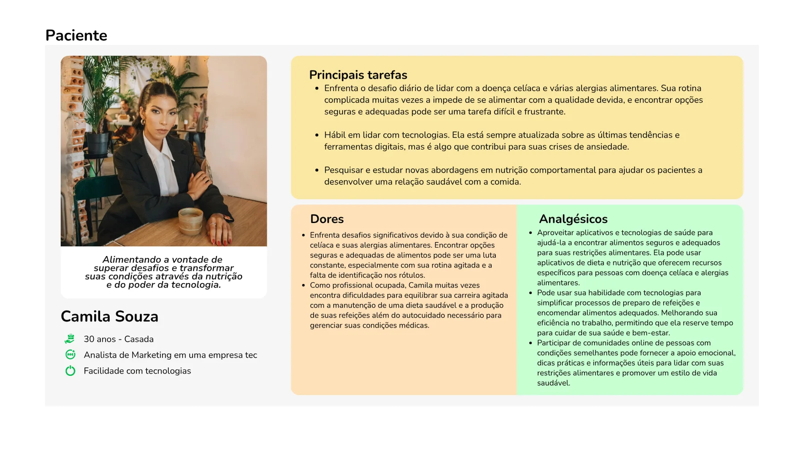


Jornada do usuário
Com as personas definidas, traçamos a jornada de cada uma para entender como se relacionam com a plataforma em diferentes momentos. Esse mapeamento nos permitiu visualizar todo o caminho percorrido — desde o primeiro contato com a solução até a finalização de uma ação, identificando pontos críticos, barreiras e oportunidades. Com isso, criamos uma base estratégica para desenvolver experiências mais intuitivas, fluidas e alinhadas às expectativas do projeto.
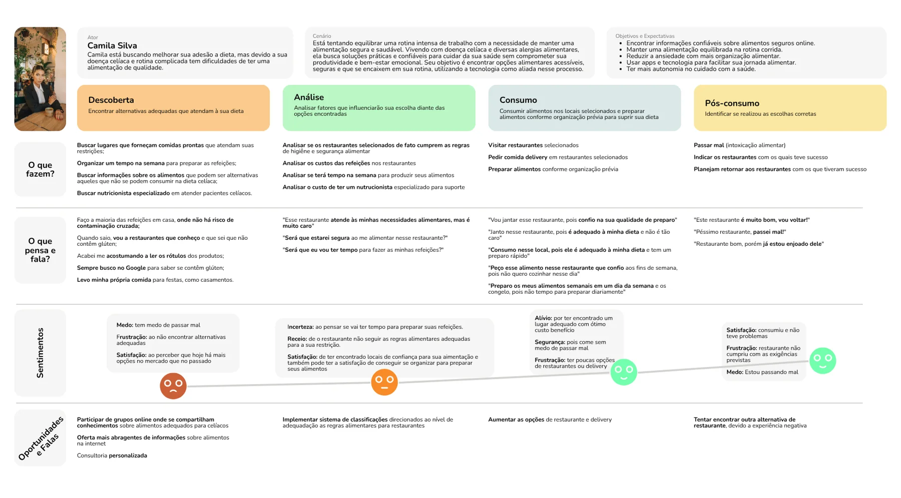
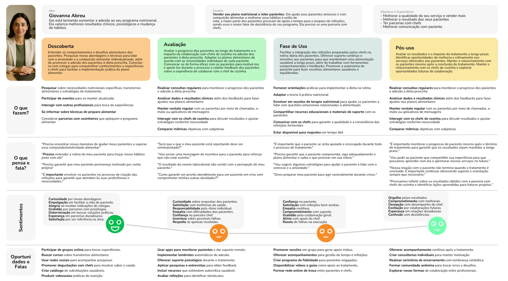

Fluxos da Solução
Considerações para o desenvolvimento da solução
A partir dos dados e insights coletados nas fases de pesquisa, destacam-se os seguintes pontos essenciais para nortear a construção da solução:
Integração com canais de comunicação já utilizados pelos usuários
- Viabilizar a integração entre o aplicativo e o WhatsApp, promovendo uma experiência fluida e amigável.
- Permitir o envio de notificações, lembretes e interações por meio do app ou do WhatsApp, respeitando a preferência do usuário.
Acessibilidade e simplicidade na interface
- Projetar uma navegação intuitiva, com usabilidade voltada especialmente para quem tem baixa familiaridade com tecnologia.
- Priorizar as funcionalidades essenciais — como acompanhamento nutricional e planejamento alimentar — antes de avançar para recursos mais complexos.
Personalização de experiências e serviços
- Adaptar recomendações, conteúdos e planos nutricionais de acordo com os objetivos e condições de saúde dos usuários, como emagrecimento, hipertensão, diabetes, entre outros.
Facilidade de adesão e incentivo à continuidade
- Implementar estratégias que incentivem a adesão inicial, como testes gratuitos ou benefícios nas primeiras consultas.
- Adotar recursos que estimulem o engajamento contínuo, como gamificação, metas semanais e recompensas.
Criação de um ecossistema através de parcerias estratégicas: estabelecer colaborações com nutricionistas, academias, restaurantes e empresas de alimentação saudável para enriquecer a oferta de valor ao usuário e fortalecer a presença da solução no mercado.
Oportunidades identificadas
Adoção do WhatsApp como canal de relacionamento
A preferência pelo WhatsApp representa uma oportunidade para integrar funcionalidades de comunicação direta no app, ou até mesmo criar fluxos automatizados que utilizem a plataforma como ponto de contato.
Alimentação saudável com praticidade
Muitos usuários recorrem a refeições congeladas ou caseiras. Há espaço para oferecer kits de alimentação saudável, receitas fáceis, planejamento de compras e até delivery parceiro, facilitando decisões alimentares no dia a dia.
Segmentação por condições específicas de saúde
Criar soluções voltadas a grupos com necessidades específicas, como diabéticos ou hipertensos, pode gerar valor percebido mais alto e ampliar a base de usuários engajados.
Busca por personalização e acompanhamento constante
A demanda por orientações individualizadas e suporte contínuo abre espaço para recursos como acompanhamento remoto, alertas personalizados, conteúdos educativos e contato com profissionais.
Modelo híbrido como diferencial competitivo
A aceitação do modelo híbrido (presencial + online) é uma tendência consolidada. Com o apoio da tecnologia, é possível oferecer uma experiência mais flexível, humanizada e eficaz, conectando usuários e nutricionistas com mais proximidade.
Workshops
Durante o projeto, realizamos dois workshops colaborativos fundamentais para alinhar perspectivas, gerar insights e fortalecer as decisões de design: o Lightning Decision Jam (LDJ) e o workshop de Personas.
Ambas as dinâmicas foram conduzidas com foco em criar um ambiente seguro e participativo, envolvendo toda a equipe, garantindo espaço igualitário para escuta ativa e contribuição de ideias. A abordagem utilizada permitiu a ideação de forma objetiva e coletiva, facilitando o desbloqueio de entraves e definindo com clareza os próximos passos do projeto.
Cada workshop teve objetivos bem definidos e expectativas alinhadas previamente, o que contribuiu para a construção de soluções mais coerentes com as necessidades reais dos usuários e do negócio. A seguir, apresentamos os registros e aprendizados de cada etapa.
Priorização
Do problema à oportunidade: perguntas que guiam o design da solução
A partir da análise dos dados coletados da pesquisa (quantitativa e qualitativa), insights da Matriz CSD e o mapeamento das dores dos usuários e dos principais desafios identificados pelos usuários, priorizamos quatro problemas centrais que impactam diretamente a adesão a hábitos alimentares saudáveis e ao uso de soluções digitais na área da nutrição:
Problemas prioritários
Baseados na análise dos dados da pesquisa:
- Falta de tempo para manter uma alimentação saudável.
- Percepção de alto custo dos alimentos saudáveis.
- Falta de acompanhamento nutricional acessível e contínuo.
- Baixa adesão a soluções digitais por dificuldade de uso ou desconfiança.
Por que priorizamos esses problemas?
- Foram recorrentes nas respostas da pesquisa.
- Representam barreiras reais à experiência e ao sucesso do usuário.
- Resolver essas dores pode aumentar a adesão à solução e gerar valor concreto.
How Might We…
Perguntas que guiam o design da solução:
- Como podemos integrar a praticidade do WhatsApp com as funcionalidades de um app para nutricionistas?
- Como podemos tornar o uso de tecnologias para saúde alimentar mais simples e motivador para diferentes idades?
- Como podemos personalizar a experiência, atendendo desde metas gerais (ex.: emagrecimento) até necessidades específicas (ex.: dietas restritivas)?
- Como podemos melhorar a comunicação entre nutricionistas e pacientes com eficiência, segurança e privacidade?
- Como podemos tornar a alimentação saudável mais prática e acessível, mesmo com refeições prontas ou delivery?
- Como podemos engajar os usuários no uso contínuo da solução de forma motivadora e recompensadora?
- Como podemos apoiar nutricionistas no uso da ferramenta para que vejam valor real e a integrem à prática profissional?
Priorização de soluções
Entre todas as ideias levantadas, selecionamos as soluções mais viáveis, relevantes e com maior potencial de impacto para o usuário.
Soluções priorizadas
- Aplicativo com funcionalidades de planejamento alimentar, lembretes e suporte remoto.
- Integração com WhatsApp para facilitar o engajamento e a comunicação.
- Parcerias com nutricionistas, academias e serviços de alimentação saudável.
- Sistema de personalização baseado em metas e condições de saúde.
Justificativas
- São soluções diretamente conectadas aos problemas identificados.
- Ajudam a reduzir barreiras como tempo, custo e desorganização.
- Favorecem o engajamento contínuo e uma experiência mais fluida.
Priorização de funcionalidades
Funcionalidades definidas para o MVP
- Planejamento de refeições personalizadas.
- Acompanhamento de metas e hábitos alimentares.
- Notificações e lembretes (app + WhatsApp).
- Chat com nutricionista (ou chatbot para dúvidas básicas).
- Recomendações de receitas rápidas e acessíveis.
Justificativas
- São funcionalidades que resolvem as dores mais urgentes.
- Têm potencial de alto valor percebido logo no primeiro uso.
- Podem ser implementadas com recursos técnicos viáveis para um MVP.
Roadmap e escopo do MVP
O que foi feito: definimos o escopo inicial com foco em entregas rápidas e com alto impacto. O MVP (Produto Mínimo Viável) será testado para validação de hipóteses.
Escopo do MVP
- App com cadastro e perfil nutricional básico.
- Planejamento de refeições semanal com sugestões automatizadas.
- Sistema de metas e lembretes.
- Canal de comunicação com nutricionista via WhatsApp.
- Biblioteca com receitas saudáveis filtradas por objetivo.
Writing: a voz do Nucare
Para adequar o posicionamento do Nucare em relação a cada um dos nossos perfis de usuários — pacientes, nutricionistas e cozinheiros — recorremos às entrevistas realizadas com voluntários que representam esses grupos, de forma complementar às pesquisas já realizadas. A intenção foi extrair informações relevantes a partir de termos recorrentes ou enfatizados do vocabulário.
Nuvem de palavras
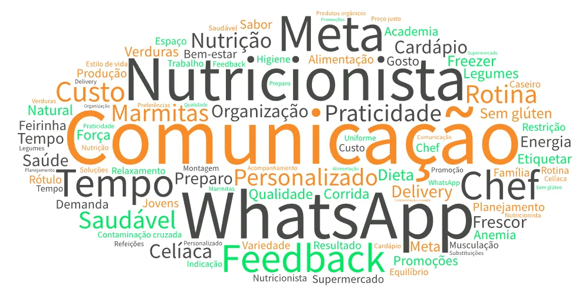
Princípios de voz
Com base nas necessidades dos nossos usuários, ressaltamos as seguintes características de voz para estabelecer um padrão de comunicação consistente:
- Cuidadosa: queremos ser uma presença atenciosa para nossos usuários, antecipando e prevenindo problemas, e ajudando a aliviar preocupações e ansiedades relacionadas à saúde, para que eles possam se sentir amparados em suas jornadas.
- Confiável: buscamos oferecer uma plataforma sólida e segura, onde nossos usuários percebam e possam recorrer sempre que precisarem de informações precisas e atuais sobre seus programas nutricionais, minimizando incertezas e proporcionando estabilidade no acompanhamento.
- Motivadora: queremos inspirar e motivar nossos usuários a aderir ao plano alimentar e a alcançar seus objetivos de saúde e bem-estar, estimulando a autonomia e a autossuficiência, e ajudando a superar os obstáculos e desafios que possam surgir ao longo do caminho.
Esses são princípios que guiam nossa abordagem. A partir deles, ajustamos o tom cabível a cada situação.
Tons de voz
Pacientes
A comunicação que não seja natural pode contribuir para que a pessoa em dieta perceba o acompanhamento nutricional como um pacote impositivo, rigoroso e insustentável. Para que se sinta à vontade, tornamos a linguagem mais descontraída, mas sem exageros, para preservar a credibilidade da mensagem e evitar um tom artificial. Buscamos encontrar um equilíbrio entre a necessidade de apoio e a necessidade de autonomia do paciente, para que se sinta acolhido e acompanhado sem sentir-se mimado ou vigiado.
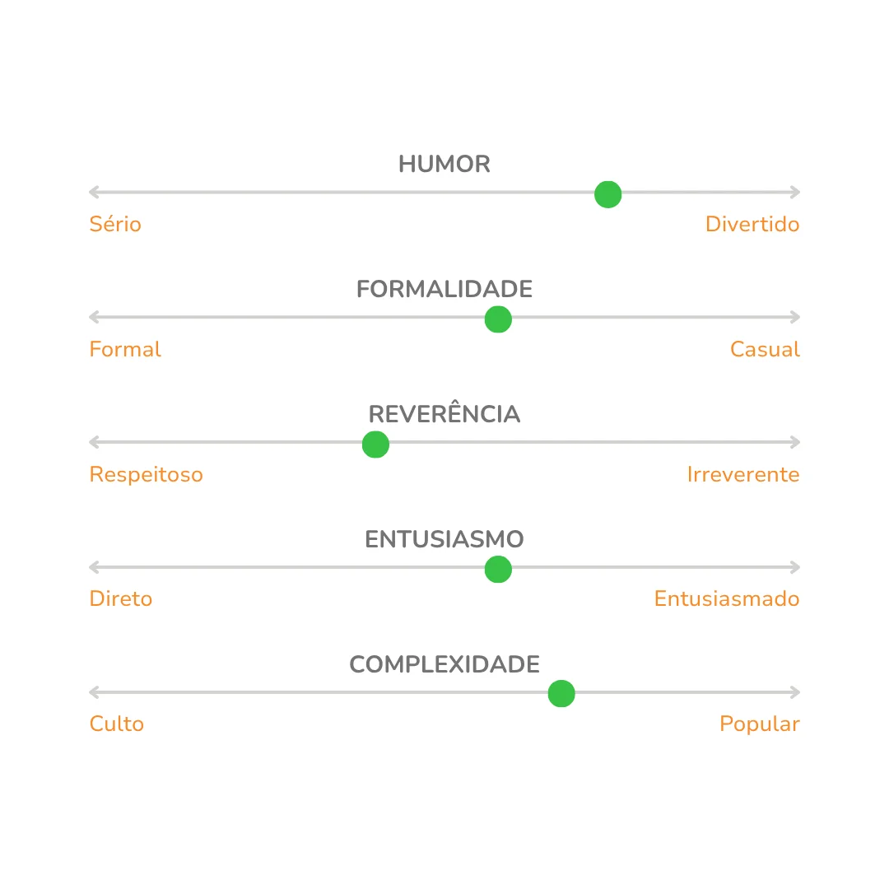
Nutricionistas
Ao nos dirigirmos a nutricionistas, nossa prioridade é estabelecer uma comunicação clara, objetiva e profissional, semelhante à interação entre colegas da área. Isso significa que nos esforçamos para evitar o uso excessivo de termos técnicos, e em vez disso, buscamos utilizar uma linguagem prática, que permita uma troca de informações descomplicada e entendimento eficiente.
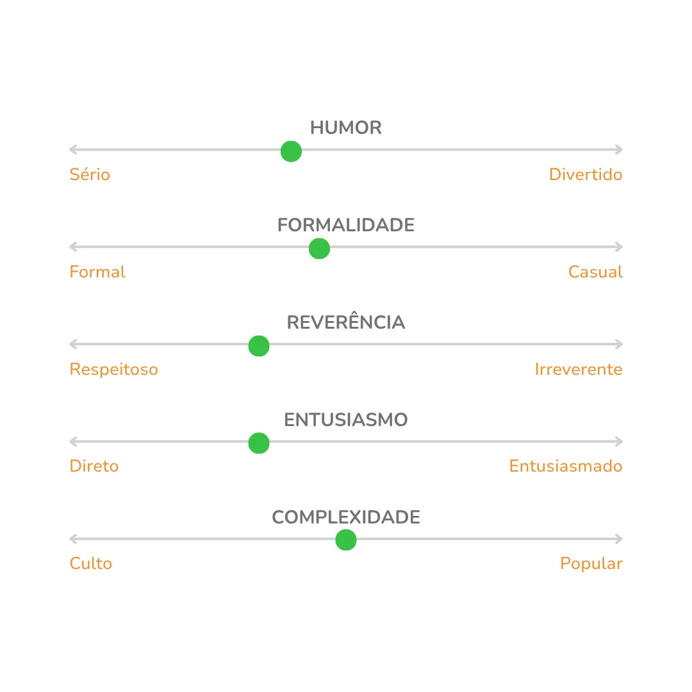
Chefs
Para cozinheiros, embora muitos trabalhem de forma informal, identificamos que os profissionais da área buscam valorização e reconhecimento. Portanto, nossa abordagem é respeitosa e formal, para corresponder a essa aspiração por maior reconhecimento. No entanto, novamente evitamos um vocabulário excessivamente técnico, pois queremos que todos os cozinheiros, independentemente de sua formação, se sintam acolhidos e confortáveis com a linguagem que usamos.

Card sorting
Para definirmos os termos ideais para navegação e interação no aplicativo, seguimos a convenção sempre que apropriado, com o objetivo de não gerar dúvidas desnecessárias. Além disso, realizamos um levantamento daqueles que mais geraram incerteza e em seguida testamos com potenciais usuários, determinando então quais termos são mais intuitivos e adequados para uso.
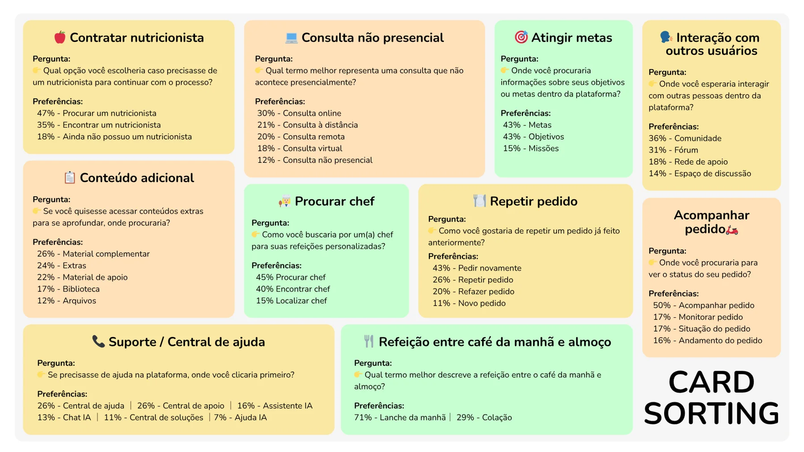
Interface
Com as necessidades dos usuários mais claras após as etapas anteriores, demos início ao processo de definição da interface e identidade visual do produto. A solução final será um aplicativo, desenvolvido a partir dos insights e aprendizados extraídos ao longo da pesquisa, com foco em proporcionar uma experiência centrada no usuário e aumentar a efetividade do serviço.
Nesta fase, além das atividades voltadas para a ideação das telas, também foi criado o Design System do projeto, estabelecendo padrões visuais e funcionais para garantir consistência. Ainda nesse momento, realizamos os testes de usabilidade com usuários, etapa essencial para validar se o fluxo proposto realmente simplifica a jornada de uso e atende às expectativas do público.
Concepção — sketch
Definimos o escopo inicial com foco em entregas rápidas e com alto impacto. O MVP (Produto Mínimo Viável) foi testado para validação de hipóteses:
- Biblioteca com receitas saudáveis filtradas por objetivo
- Canal de comunicação com nutricionista via WhatsApp
- Sistema de metas e lembretes
- Planejamento de refeições semanal com sugestões automatizadas
- App com cadastro e perfil nutricional básico

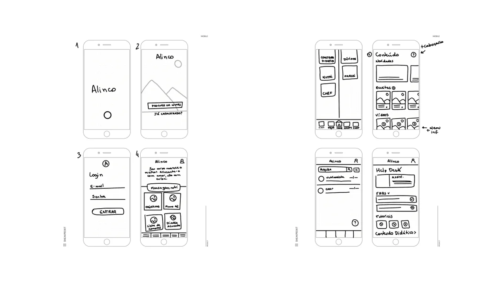
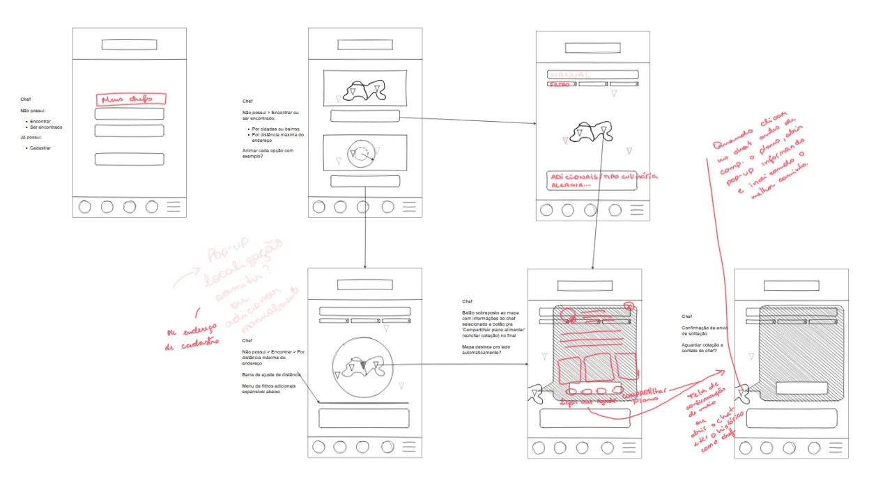
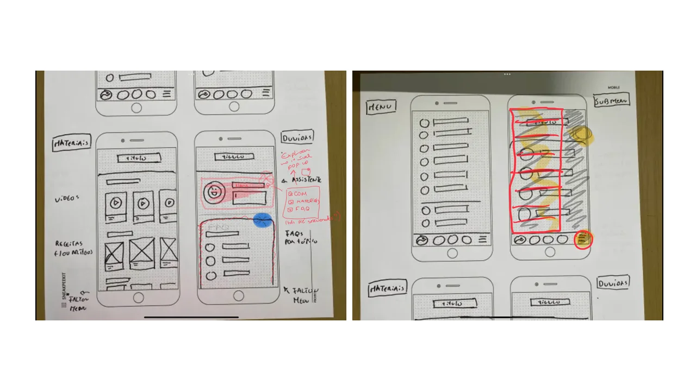

Guia de estilo
Para o desenvolvimento do protótipo de alta fidelidade, foi essencial definir uma identidade visual consistente e atrativa. A partir disso, criamos o Guia de Estilo do aplicativo, que estabelece diretrizes claras para o uso de todos os elementos gráficos da interface.
Esse guia tem como objetivo garantir coerência visual e orientar tanto o design quanto a experiência de interação dos usuários com o produto. As cores foram cuidadosamente escolhidas para serem vibrantes e envolventes, contribuindo para uma navegação mais agradável e intuitiva.
Marca
O nome da nossa marca, “Nucare”, surge da junção dos termos “Nutrição” e “Care” (cuidado, em inglês). Essa combinação reflete a essência do aplicativo: promover o cuidado com a saúde por meio de uma alimentação equilibrada e um estilo de vida ativo.
Optamos por um nome com apelo internacional, visando ampliar o alcance da solução para além do mercado brasileiro. Acreditamos que os benefícios oferecidos pelo aplicativo atendem a necessidades universais, permitindo que a marca se conecte com usuários em diferentes culturas e regiões do mundo.

Paleta de cores
A escolha das cores foi inspirada em referências visuais de aplicativos de alimentação saudável, produtos naturais e orgânicos, além de plataformas voltadas para a área da saúde.
A paleta é centrada em um verde intenso como cor primária, acompanhado de suas variações tonais. Essa escolha transmite frescor, vitalidade e bem-estar, valores diretamente associados à proposta do aplicativo.
As cores secundárias e de apoio foram cuidadosamente selecionadas para complementar a cor principal, criando contrastes harmônicos que facilitam a leitura, destacam informações importantes e contribuem para uma experiência visual agradável e funcional.
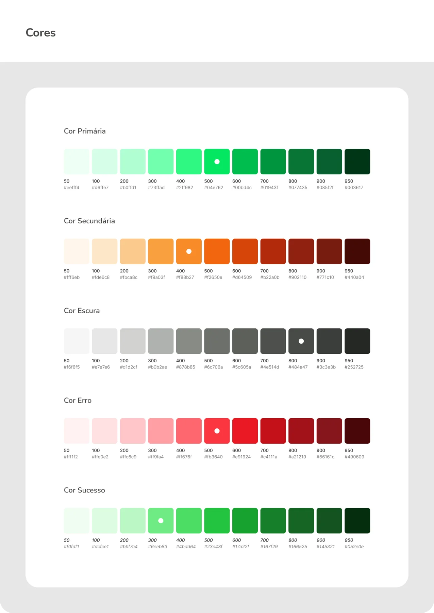
Tipografia
Optamos por uma tipografia de traços limpos e arredondados, sem detalhes nas extremidades das letras, o que reforça o estilo moderno e acessível do aplicativo. Essa escolha dialoga com as formas orgânicas do logotipo, transmitindo uma sensação de acolhimento e leveza. Além disso, proporciona uma leitura fácil e fluida, adaptando-se bem a diferentes elementos da interface, como títulos, descrições e botões.

Botões
Desenvolvemos diferentes estilos de botões, cada um com hierarquia visual bem definida, permitindo que os usuários identifiquem com facilidade as ações disponíveis em cada contexto da navegação. Foram criadas versões para ações primárias, secundárias e desabilitadas, com variações de cor, forma e preenchimento, garantindo clareza, acessibilidade e consistência na interação com o aplicativo.

Wireframe
A partir dos primeiros esboços (rabiscoframes), demos início à criação do protótipo de média fidelidade, começando também a estruturar a identidade visual da solução.
Utilizamos o Miro para organizar e validar as ideias iniciais de layout e fluxo. Após essa etapa, avançamos para o Figma, onde refinamos as escolhas visuais e desenvolvemos o protótipo com mais precisão e coesão, aproximando-o da experiência final esperada.
Protótipo de alta fidelidade
Com base nos aprendizados das etapas anteriores do protótipo de média fidelidade, desenvolvemos o protótipo de alta fidelidade, buscando simular de forma realista a experiência do usuário final.
Nesta etapa, aplicamos a identidade visual definida, aprimoramos os elementos de interface e ajustamos os fluxos de navegação para garantir clareza, usabilidade e consistência. O objetivo foi aproximar ao máximo a solução da versão final, possibilitando testes mais precisos e feedbacks mais qualificados.
Fluxo navegacional
Testes de usabilidade
Com o protótipo finalizado, iniciamos uma etapa essencial do processo: entender como os usuários interagem com a solução e identificar possíveis obstáculos em sua experiência.
Para isso, aplicamos dois métodos complementares de teste: Thinking Aloud e Mapa de Calor.
Thinking Aloud em média fidelidade
Uma técnica simples e eficaz em que os usuários compartilham em voz alta seus pensamentos durante a interação. Essa abordagem é acessível, flexível e nos permite obter insights valiosos sobre percepções, dificuldades e tomadas de decisão em tempo real.
Mapa de calor em alta fidelidade
Nos ajudou no fluxo principal de tarefas, analisando o comportamento visual e os cliques no fluxo principal de navegação.
Utilizamos a plataforma Maze e convidamos 13 usuários a participar de um teste de usabilidade. Fornecemos algumas telas para validação de fluxo e pedimos que realizassem algumas tarefas, a fim de avaliar como os usuários interagem com o protótipo, identificando padrões de cliques e oportunidades de melhoria na usabilidade da interface.
- Número de participantes: 22.
- Duração média: 33.2s.
- Taxa de sucesso: 95,5%.
Tarefa 1 - Filtrar opções de atendimento por localidade
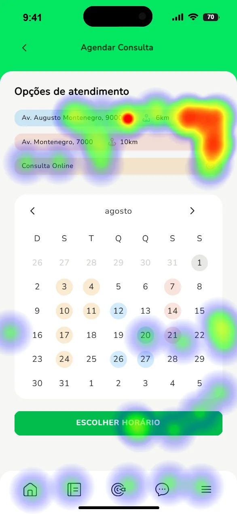
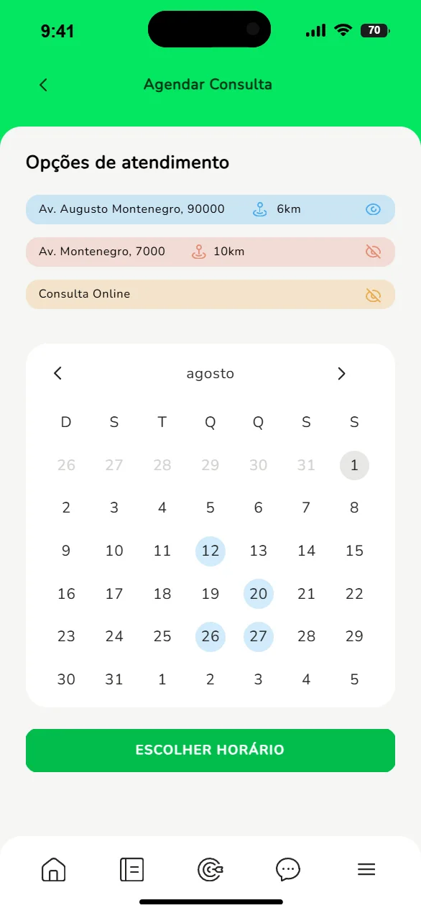
- Taxa de sucesso: 100%
- Taxa de misclick: 57.1%
- Padrões observados: alguns cliques dispersos, considerados como curiosidade em como funciona o calendário/aplicativo.
Tarefa 2 - Iniciar agendamento para data e horário específicos
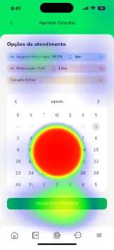
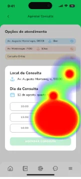


- Taxa de sucesso: 95.2%
- Taxa de misclick: 64.6%
- Padrões observados: alguns cliques dispersos, considerados como curiosidade em como funciona o calendário/aplicativo.
Tarefa 3 - Cancelar uma consulta agendada


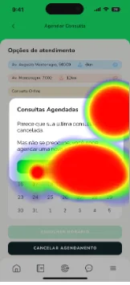
- Taxa de sucesso: 100%
- Taxa de misclick: 34.8%
- Padrões observados: alguns cliques dispersos, considerados como curiosidade em como funciona o calendário/aplicativo.
Tarefa 4 - Pergunta Yes/No
As informações, botões e ícones estavam claros e fáceis de entender?
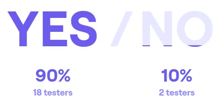
Tarefa 5 - Pergunta aberta
Questão: você gostaria de compartilhar mais algum comentário ou sugestão sobre a experiência de uso?
Pontos positivos
- Interface intuitiva e clara: participantes C, F e G elogiaram a simplicidade e a clareza da navegação. Isso mostra que a estrutura geral está funcionando bem para uma boa parte do público.
- Didatismo e simplicidade: o participante C destacou que tudo estava “bem simples e didático” — um excelente indicativo de que o fluxo está funcional.
Pontos de atenção
- Falta de feedback visual ao selecionar o dia: os participantes A e E mencionaram dificuldade em saber se o dia foi realmente selecionado. Isso indica que o estado ativo (selecionado) precisa de mais destaque visual — talvez uma cor mais contrastante, um contorno, ou uma animação leve de transição. Também notamos que, apesar do nosso protótipo possuir esse componente com animação, o Maze não foi capaz de reproduzir a opção de item selecionado.
- Primeira etapa com endereços confusa: o participante B relatou confusão inicial. Isso pode indicar que a hierarquia da informação ou os rótulos dos campos/endereço não estão suficientemente claros.
- Calendário com horários confusos e uso de legendas: o participante D achou confusa a apresentação de todos os horários juntos e as “coletes” (provavelmente um erro de digitação para cores ou legendas) pareciam botões. Isso pode apontar para um problema de semântica visual: o que deveria ser uma legenda está com aparência de botão. Além disso, pode haver carga cognitiva alta ao mostrar todos os horários de uma vez.
Insights do mapa de calor
A plataforma Maze considera como cliques errados aqueles feitos fora das áreas interativas ou pontos de foco do protótipo. No nosso caso, percebemos que muitos desses cliques aconteceram por conta da curiosidade dos usuários em explorar o funcionamento da interface, testando diferentes regiões da tela para entender se certas ações estavam disponíveis.
Conclusão
O teste se mostrou essencial para compreender o comportamento dos usuários durante o fluxo de agendamento de consultas. O teste validou que o layout atual atrai atenção para os principais CTAs, mas há espaço para melhorias em clareza e navegação.
A partir desse teste, foi possível identificar padrões importantes de uso. Esse tipo de insight reforça a importância de uma análise detalhada dos resultados, indo além dos números brutos, e considerando o contexto das ações.
Com base nos aprendizados, conseguimos ajustar pontos de confusão na jornada, pensar em melhorias para a experiência e dar um passo importante rumo à construção de um protótipo de alta fidelidade mais funcional, intuitivo e alinhado às necessidades reais do usuário.
Próximos passos do nosso case
- Rodar teste A/B com duas versões do menu;
- Fazer card sorting com usuários para validar categorização de conteúdos;
- Testar a função de IA como barra de pesquisa no protótipo, observando se ajuda na navegação;
- Dar segmento na etapa dos protótipos de usabilidade dos Chefs;
- Conduzir novas rodadas de pesquisa e testes com nutricionistas, com foco específico na seção de “Plano Alimentar”, a fim de identificar pontos de melhoria relacionados à apresentação e à compreensão das informações nutricionais. O objetivo é simplificar dados que possam gerar dúvidas ou atrapalhar a navegação — tanto no momento do preenchimento (por parte do profissional) quanto na interpretação por parte do usuário final. Itens como macronutrientes, macrominerais e vitaminas devem ser avaliados quanto à relevância, hierarquia visual e clareza das informações apresentadas.
Protótipo navegacional em alta fidelidade
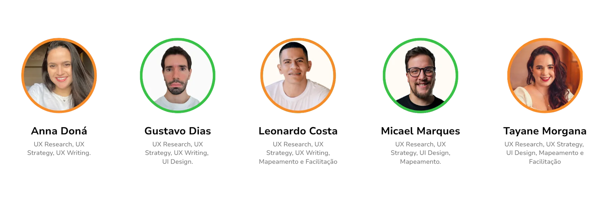